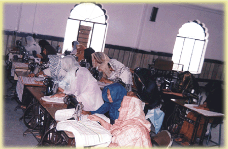

Home / Institutions
Jame-ul-Uloom Tailoring School for Women
The Tailoring Department of Jame-ul-Uloom, Jamia Masjid — girls learning the art of tailoring.
The “Tailoring Dept.” of Jame-ul-uloom Jamia Masjid: girls learning the art of tailoring.
The Founder Secretary’s essay lists a tailoring institute among the institutions established in the mosque after the nursery (read the essay), and the Calligraphy Centre page says its students are also given the chance to learn tailoring.
For admission enquiries, contact the Administrative Office through the contact directory.

For course length, fees and timings, please ask the Trust office (see Contact).